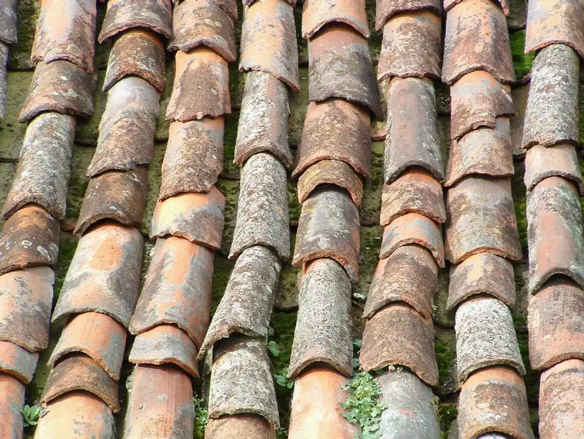
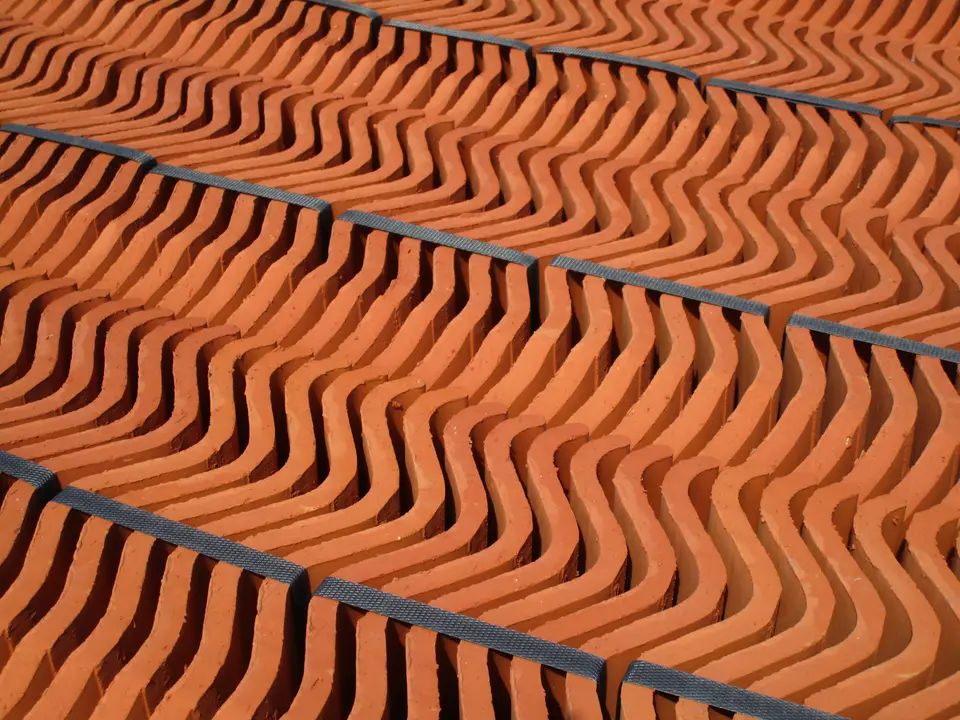
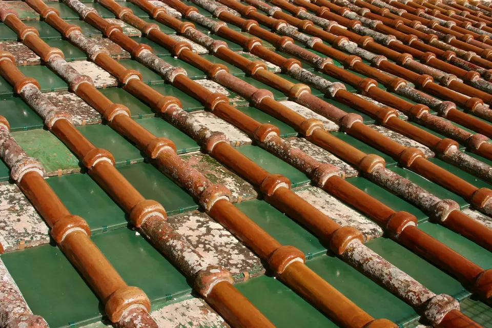
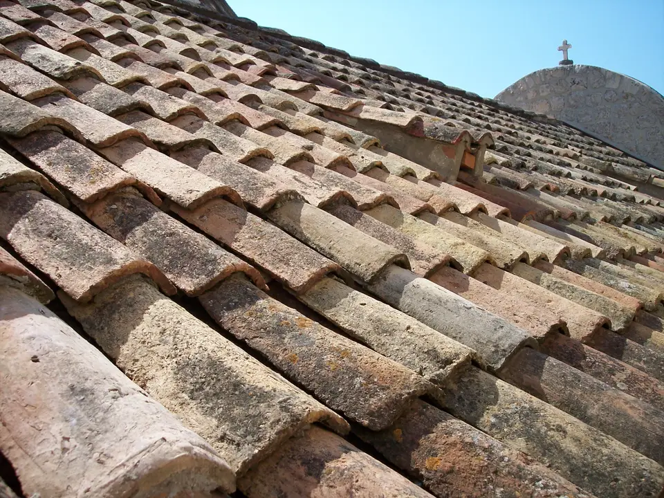
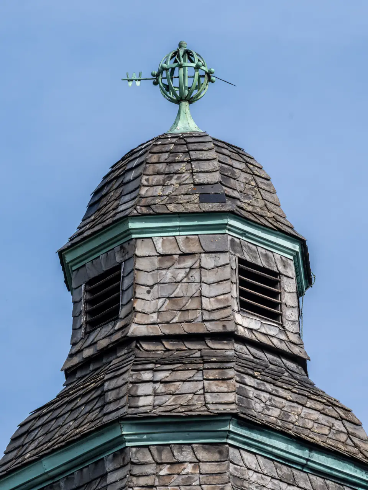
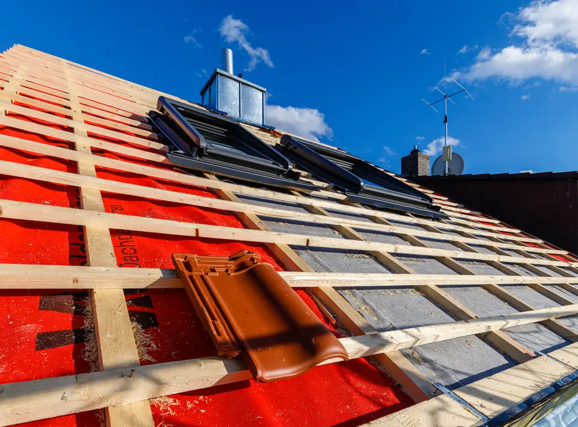
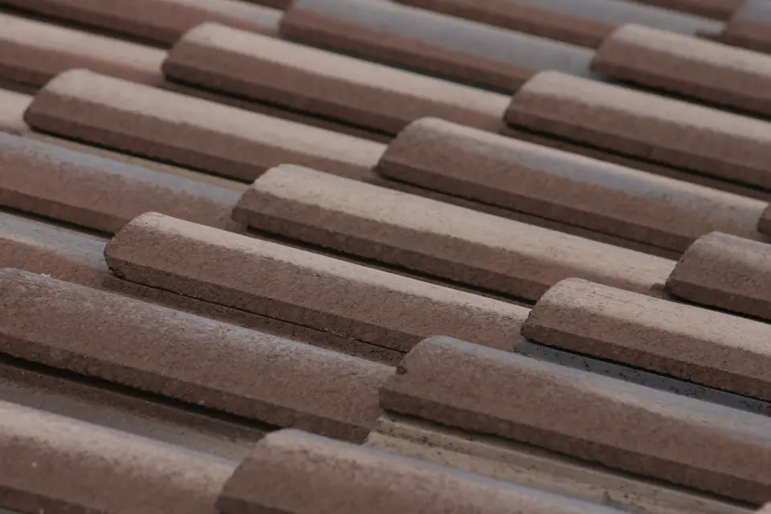

Rénovation de toiture
Dépose de l'ancienne couverture, réfection du liteonnage, pose d'écran sous-toiture HPV et installation de tuiles mécaniques ou plates.

Artisan couvreur zingueur à Strasbourg et dans le Bas-Rhin. Rénovation de toiture, pose de tuiles, étanchéité, zinguerie et réparation de fuites avec garantie décennale.
Assureur fictif, contrat n° DEMO-0001 : chaque chantier est couvert dix ans.
Une entreprise déclarée, établie à Strasbourg, joignable au 04 00 00 00 00.
Un chiffrage écrit après visite, sans surprise ni ligne cachée.
Nous réalisons l'ensemble de vos travaux de couverture et zinguerie dans les règles de l'art pour assurer la pérennité et l'isolation thermique de votre maison.
Dépose de l'ancienne couverture, réfection du liteonnage, pose d'écran sous-toiture HPV et installation de tuiles mécaniques ou plates.
Façonnage et pose de gouttières en zinc, chéneaux, abergements de cheminée, noues et solins pour une évacuation parfaite des eaux pluviales.
Contrôle de l'ossature bois, remplacement de chevrons endommagés, traitement fongicide et pose d'isolant sous toiture.
Diagnostic précis des infiltrations, remplacement de tuiles cassées, réfection d'étanchéité et mise en sécurité d'urgence.
Découvrez quelques exemples de chantiers de couverture et zinguerie réalisés dans l'agglomération strasbourgeoise.






Nous intervenons sur l'ensemble de l'Eurométropole de Strasbourg et dans les communes limitrophes pour tous vos travaux de toiture :
Vous nous décrivez votre projet par téléphone ou via notre formulaire en ligne.
Nous examinons la toiture, mesurons les surfaces et identifions les contraintes techniques.
Nous vous adressons un devis complet avec le détail des matériaux et des interventions.
Nous planifions et exécutons le chantier avec rigueur, dans le respect des normes en vigueur.
Des signes visibles comme des tuiles poreuses, ébréchées ou déplacées, des traces d'humidité dans les combles, ou la présence excessive de mousse indiquent qu'un diagnostic de votre couverture est nécessaire.
Pour des raisons évidentes de sécurité des artisans et pour préserver l'étanchéité de votre habitation, les chantiers de toiture ne peuvent être engagés sous de fortes intempéries. En cas d'urgence, nous posons un bâchage temporaire.
L'ensemble de nos travaux de réfection de toiture et de charpente bénéficie de la garantie décennale (Assureur fictif, police n° DEMO-0001), vous protégeant contre tout vice pendant 10 ans.
Les éléments de zinguerie (abergements, chéneaux, noues, gouttières) assurent la jonction étanche entre les différents pans de toiture et les maçonneries. Une zinguerie défaillante est la cause principale des infiltrations d'eau.